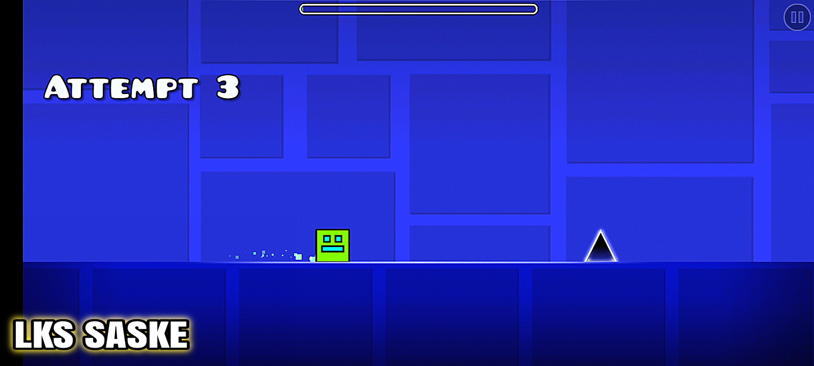
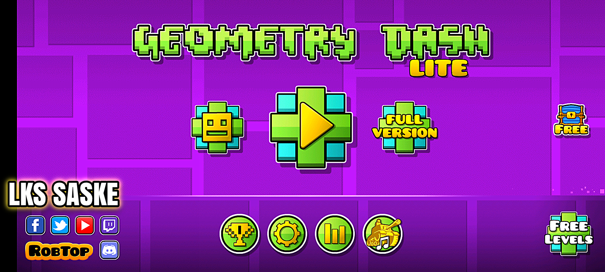

Dropdown Menu
MENU
Home
About
Youtube
Contact Us
GEOMETRY DASH LITE/THE EXCLUSIVE GAME
By LKS SASKE 🔱
Check out my social media profiles:
YouTube
Facebook
Instagram
ABOUT GEOMETRY DASH LITE
Geometry Dash Lite is a popular mobile game developed by Swedish game developer Robert Topala and released in August 2013. The game is a rhythm-based platformer that has gained a large following due to its challenging gameplay, catchy music, and vibrant graphics. In this article, we will take an in-depth look at Geometry Dash Lite, exploring its gameplay mechanics, level design, and overall appeal.
Gameplay
Geometry Dash Lite is a fast-paced platformer that challenges players to navigate through a series of obstacles and hazards by jumping, flying, and flipping their way to the finish line. The controls are simple and intuitive, with players tapping on the screen to jump and holding down on the screen to fly. The gameplay is split into levels, each of which has a unique soundtrack that corresponds to the obstacles and challenges players will face. The levels in Geometry Dash Lite are divided into different worlds, with each world having a distinct theme and set of obstacles. As players progress through the levels, they will encounter a variety of challenges, including spikes, moving platforms, and gravity-reversing portals. The difficulty of the levels increases as players advance through the game, with each level presenting new and more complex obstacles to overcome. One of the key features of Geometry Dash Lite is the ability for players to create their own levels using the in-game level editor. This feature allows players to design custom levels with their own obstacles, hazards, and music tracks, which can then be shared with other players online. This level of creativity adds an extra layer of replay value to the game, as players can continuously challenge themselves and others with new and unique levels. 
Level Design
The level design in Geometry Dash Lite is one of the game's standout features, with each level featuring a unique and colorful aesthetic that is complemented by a catchy soundtrack. The levels are designed to sync up with the game's music, creating a seamless and immersive experience for players as they navigate through the obstacles and challenges. The obstacles and hazards in Geometry Dash Lite are strategically placed to test players' reflexes and timing, requiring precise jumps and movements to avoid colliding with spikes or falling off the platform. The levels are expertly crafted to provide a sense of progression and accomplishment, with each successful completion feeling like a significant achievement. The level design in Geometry Dash Lite is further enhanced by the game's visual effects, which include dynamic lighting, particle effects, and color gradients that add depth and dimension to the levels. These visual elements help to create a vibrant and engaging world for players to explore, making the gameplay experience more immersive and enjoyable. 
Overall Appeal
Geometry Dash Lite has garnered a large and dedicated following since its release in 2013, with millions of players around the world enjoying the game's challenging gameplay and infectious soundtrack. The game's simple yet addictive mechanics make it easy for players to pick up and play, while the increasing difficulty and complexity of the levels provide a satisfying challenge for more experienced players. One of the key factors contributing to the game's appeal is its high level of replay value, with players constantly striving to improve their skills and master the game's levels.
The ability to create and share custom levels also adds a social aspect to the game, allowing players to compete with friends and other players online to see who can complete the most challenging levels. The game's vibrant graphics and catchy music contribute to its overall appeal, creating a fun and immersive experience for players of all ages. The game's fast-paced gameplay and challenging levels keep players coming back for more, as they strive to improve their skills and conquer each new obstacle that stands in their way.
In conclusion, Geometry Dash Lite is a standout mobile game that offers a unique and engaging gameplay experience for players of all skill levels. With its challenging levels, vibrant visuals, and catchy music, the game has become a beloved favorite among fans of platformers and rhythm games. Whether you're a casual player looking for a fun and addictive game to pass the time, or a seasoned gamer seeking a new challenge, Geometry Dash Lite is sure to provide hours of entertainment and excitement.
Centered Red Title
WATCH EXCLUSIVE GAMEPLAY
MORE RELATED CONTENT
FIFA 16 PPSSPP MOD EA SPORTS FC 24 ANDROID OFFLINE BEST GRAPHICS PS5 ALL NEW FACES & LAST TRANSFER
WINNING ELEVEN 2024 ANDROID WITH NEW UPDATE AFC NATIONAL TEAM, TRANSFER 23/24, KITS and HD GRAPHICS
PPSSPP SETTINGS AND GAMES SET UP FOR BEGINNERS
MORE GUIDES
👇👇
MORE GAMES
Contact Us